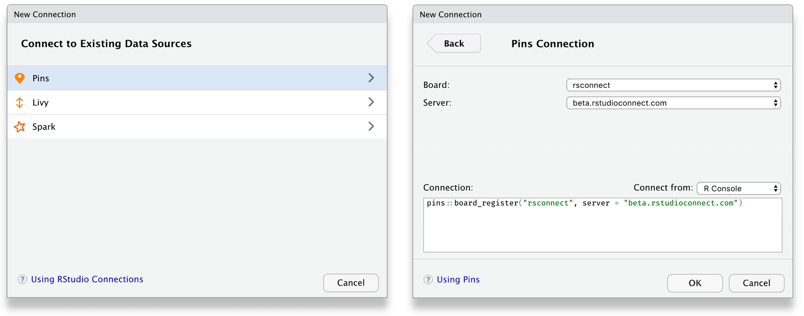
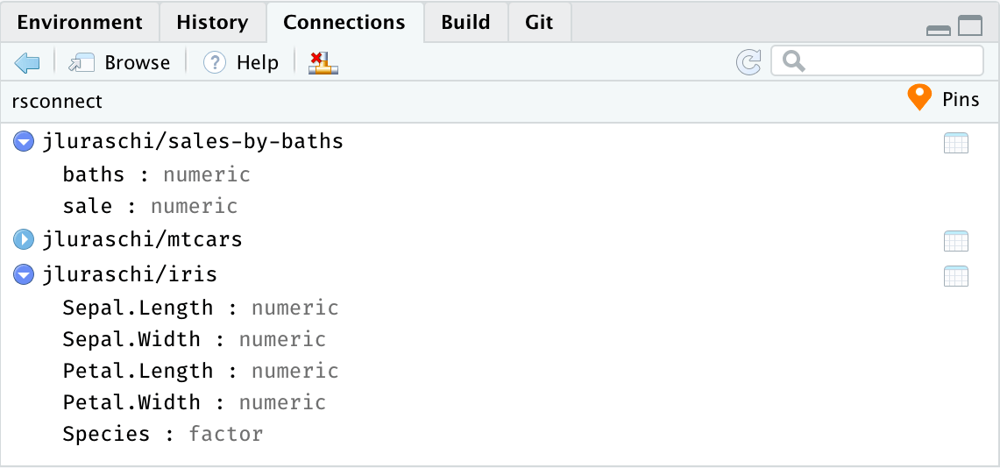
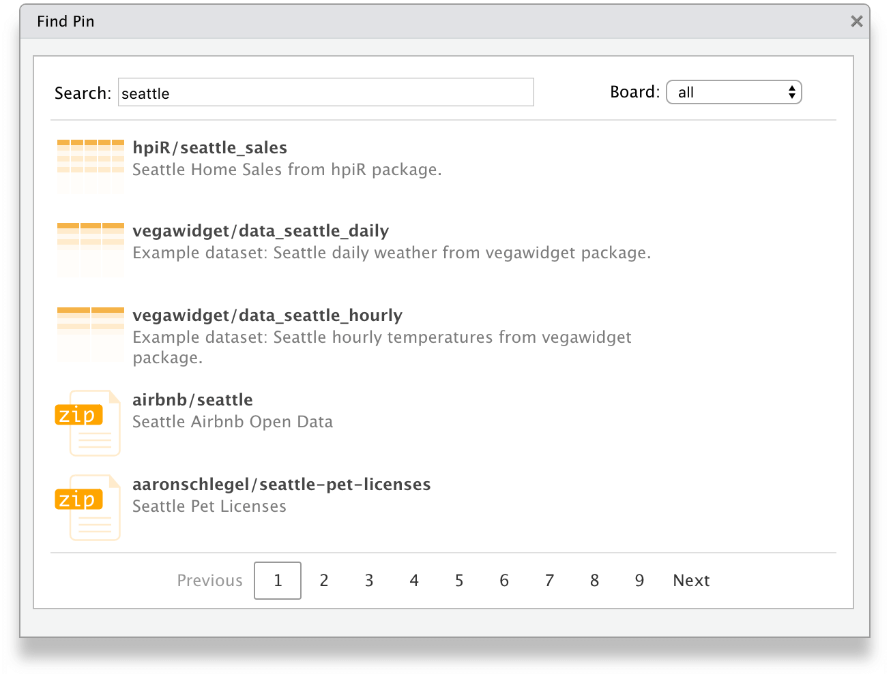
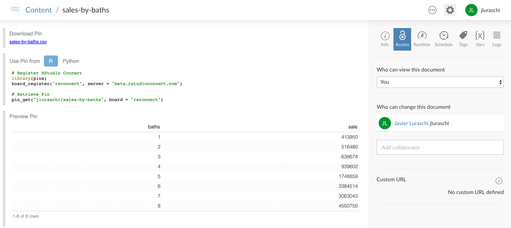
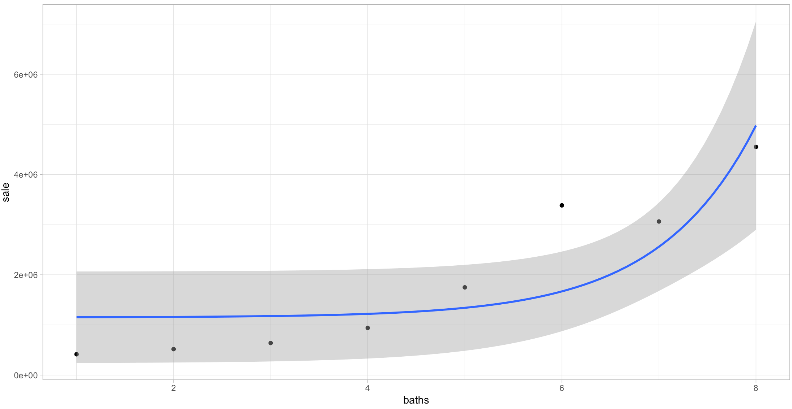

2019-09-09
Please note that the information presented in this post reflects the package as it stood when initially released, and may now be outdated. For the most up-to-date information, kindly refer to https://pins.rstudio.com/.
Today we are excited to announce the pins package is available on CRAN! pins allows you to pin, discover and share remote resources, locally or in remote storage.
If you find yourself using download.file() or asking others to download files before running your R code, use pin() to achieve fast, simple and reliable reproducible research over remote resources.
You can use the pins package to:
pin() stores resources in boards which you can then retrieve with pin_get().pin_find().board_register().You can install pins from CRAN with:
install.packages("pins")You can pin remote files with pin(url). pin(url) downloads and caches the remote url, returning the path to the locally cached file. This gives you the ability to work offline (or continue working even if the remote resource disappears) with minimal changes to your existing code. When called again in the future, pin() will automatically check for changes, and only re-download the file if needed.
For instance, the following example makes use of a remote CSV file, which you can download and cache with pin() before it’s loaded with read_csv():
library(tidyverse)
library(pins)
url <- "https://raw.githubusercontent.com/facebook/prophet/master/examples/example_retail_sales.csv"
retail_sales <- read_csv(pin(url))# A tibble: 293 x 2
ds y
<date> <dbl>
1 1992-01-01 146376
2 1992-02-01 147079
3 1992-03-01 159336
4 1992-04-01 163669
5 1992-05-01 170068
6 1992-06-01 168663
7 1992-07-01 169890
8 1992-08-01 170364
9 1992-09-01 164617
10 1992-10-01 173655
# … with 283 more rowsThis makes reading subsequent remotes files orders of magnitude faster, files are only downloaded when the remote resource changes.
The pins package allows you to discover remote resources using pin_find(), currently, it can search resources in CRAN packages, Kaggle and RStudio Connect. For instance, we can search resources mentioning “seattle” in CRAN packages as follows:
pin_find("seattle", board = "packages")# A tibble: 6 x 4
name description type board
<chr> <chr> <chr> <chr>
1 hpiR/ex_sales Subset of Seattle Home Sales from hpiR package. table packa…
2 hpiR/seattle_sales Seattle Home Sales from hpiR package. table packa…
3 latticeExtra/Seata… Daily Rainfall and Temperature at the Seattle-Tac… table packa…
4 microsynth/seattle… Data for a crime intervention in Seattle, Washing… table packa…
5 vegawidget/data_se… Example dataset: Seattle daily weather from vegaw… table packa…
6 vegawidget/data_se… Example dataset: Seattle hourly temperatures from… table packa…Notice that all pins are referenced as <owner>/<name> and even if the <owner> is not provided, each board will assign an appropriate one. While you can ignore <owner> and reference pins by <name>, this can fail in some boards if different owners assign the same name to a pin.
You can then retrieve a pin as a local path through pin_get():
pin_get("hpiR/seattle_sales")# A tibble: 43,313 x 16
pinx sale_id sale_price sale_date use_type area lot_sf wfnt bldg_grade tot_sf
<chr> <chr> <int> <date> <chr> <int> <int> <dbl> <int> <int>
1 ..00… 2013..… 289000 2013-02-06 sfr 79 9295 0 7 2560
2 ..00… 2013..… 356000 2013-07-11 sfr 18 6000 0 6 1540
3 ..00… 2010..… 333500 2010-12-29 sfr 79 7200 0 8 2380
4 ..00… 2016..… 577200 2016-03-17 sfr 79 7200 0 8 2380
5 ..00… 2012..… 237000 2012-05-02 sfr 79 5662 0 7 1370
6 ..00… 2014..… 347500 2014-03-11 sfr 79 5830 0 7 880
7 ..00… 2012..… 429000 2012-09-20 sfr 18 12700 0 7 1640
8 ..00… 2015..… 653295 2015-07-21 sfr 79 7000 0 7 1990
9 ..00… 2014..… 427650 2014-02-19 townhou… 79 3072 0 7 1980
10 ..00… 2015..… 488737 2015-03-19 townhou… 79 3072 0 7 1980
# … with 43,303 more rows, and 6 more variables: beds <int>, baths <dbl>,
# age <int>, eff_age <int>, longitude <dbl>, latitude <dbl>Finally, you can also share resources with other R sessions and other users by publishing to a local folder, Kaggle, GitHub and RStudio Connect.
To publish resources in Kaggle, you would first need to register the Kaggle board by creating a Kaggle API Token, and then publishing to Kaggle by storing a pin in the ‘kaggle’ board:
```{r}
board_register_kaggle(token = "<path-to-kaggle.json>")
pin_get("hpiR/seattle_sales") %>%
pin(name = "seattle_sales", board = "kaggle")
```There are other boards you can use or even create custom boards as described in the Understanding Boards article; in addition, pins can also be used with RStudio products which we will describe next.
You can use RStudio and RStudio Connect to discover and share content within your organization with ease.
To enable new boards, like Kaggle and RStudio Connect, you can use RStudio’s Data Connections to create a new ‘pins’ connection, which provides you access to many boards:

Once connected, you can use the connections pane to track the pins you own and preview them with ease. Notice that one connection is created for each board.

To discover remote resources, simply expand the “Addins” menu and select “Find Pin” from the dropdown. This addin allows you to search for pins across all boards, or scope your search to particular ones as well:

You can then share local resources using the RStudio Connect board. Lets use dplyr and the hpiR_seattle_sales pin to analyze this further and then pin our results in RStudio Connect.
board_register_rsconnect()
pin_get("hpiR/seattle_sales") %>%
group_by(baths = ceiling(baths)) %>%
summarise(sale = floor(mean(sale_price))) %>%
pin("sales-by-baths", board = "rsconnect")After a pin is published, you can then browse to the pin’s content from the RStudio Connect web interface.

You can now set the appropriate permissions in RStudio Connect, and voila! From now on, those with access can make use of this remote pin locally!
For instance, a colleague can reuse the sales-by-baths pin by retrieving it from RStudio Connect and visualize its contents using ggplot2:
library(pins)
board_register_rsconnect()
pin_get("sales-by-baths") %>%
ggplot(aes(x = baths, y = sale)) +
geom_point() + geom_smooth(method = 'lm', formula = y ~ exp(x))
Pins can also be automated using scheduled R Markdown. This makes it much easier to create Shiny applications that rely on scheduled data updates or to share prepared resources across multiple pieces of content. You no longer have to fuss with file paths on RStudio Connect, mysterious resource URLs, or redeploying application code just to update a dataset!
Experimental support for pins will be introduced in an upcoming release, stay tuned for RStudio Connect 1.7.8!
Please also make sure to pin visit, rstudio.github.io/pins, where you can find detailed documentation and additional resources. Thanks!